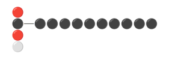
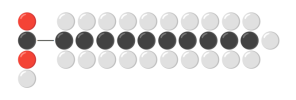
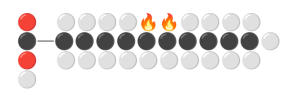
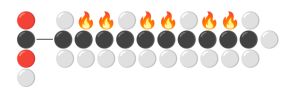
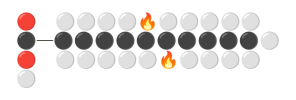

What are the healthiest oils for cooking, based on their fatty acid content?
🔎🍳 What are the healthiest oils and fats for cooking? Let’s dive into the molecular composition and stability of lipids to find out:
Oils and fats are mostly made of triglycerides.
A triglyceride consists of glycerol that connects 3 fatty acids together.
Fatty acids consist of a carboxylic acid head with a highly variable carbon chain (variable number of Carbon atoms and variable number of Hydrogen atoms attached to them).

Legend:
⚪Hydrogen 🔴Oxygen ⚫Carbon
🟩🟧🟥🟫 4 categories of fatty acids:
🟩 Saturated fatty acids (SFA):
Zero pair of Carbon atoms misses Hydrogen atoms

🟧 Monounsaturated fatty acids (MUFA):
One pair of Carbon atoms misses Hydrogen atoms

🟥 Polyunsaturated fatty acids (PUFA):
Multiple pairs of Carbon atoms miss Hydrogen atoms

🟫 Trans fatty acids (TFA):
One or multiple pairs of Carbon atoms miss Hydrogen atoms on opposite sides

━━━━━━━━━━━━━━━━━━━━━━━━━━━
🔥More missing H atoms
➙🔥More reactive sites
➙➙🔥Less stable fatty acid
➙➙➙🔥More sensitive to heat
➙➙➙➙🔥More harmful substances
➙➙➙➙➙🔥Less healthy to cook with
━━━━━━━━━━━━━━━━━━━━━━━━━━━
So, what’s the best oil to cook with?
➡️ From the perspective of chemical stability, the healthiest oils for cooking are the ones with the least 🔥PUFA.
Which are the healthiest fats and oils exactly?
📊 Time to take a closer look at the composition of available oils and fats.
I created a chart that shows, for each one of 24 oils and fats, the amount of SFA, MUFA, PUFA and TFA relative to the total fat. The products are sorted by increasing PUFA, so products that rank higher tend to be more stable.
Feel free to explore the interactive chart below!
💬 What’s the best oil to cook with in your view? Is your own choice based on PUFA content or other factors?
Comment, Like, and Share
→ View this post on LinkedIn